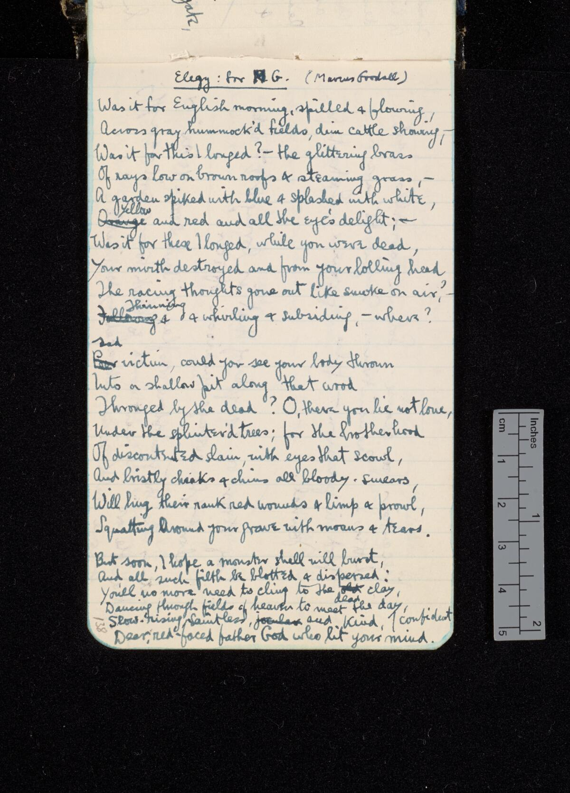
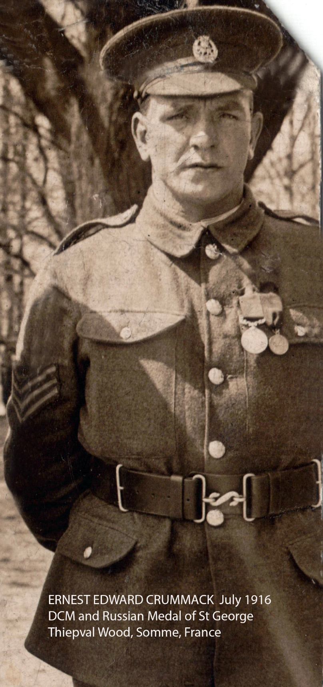
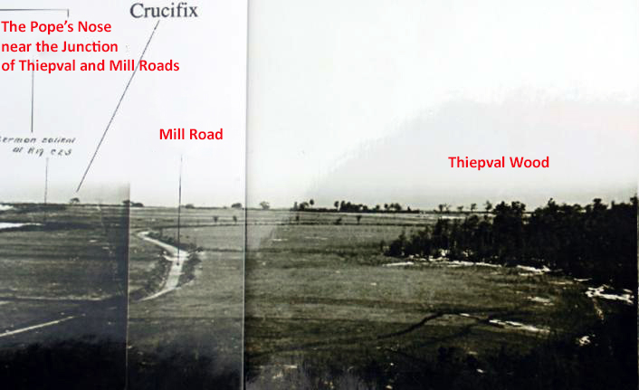

Meoncross School · GCSE History Fieldwork
2nd Lieutenant Ernest Edward Crummack MC, DCM
Ypres Salient & Somme Battlefield Expedition 2026 · Special Archival Study
|
Expedition Resource Dossier
Archive Ref: MCP-1918-EC Pupil Cohort: Year 10 GCSE |



Stand on the western levee of the Yser Canal at Essex Farm. Gaze north towards The Northern Nip at Boesinghe where Ernest Crummack and the 1/5th York & Lancs endured the deadly first German Phosgene gas attack on 19 December 1915, donning crude flannel P-helmets to hold the line.
Stand at the edge of Thiepval Wood looking across Mill Road towards the Pope's Nose redoubt. Contrast Sassoon's poetic grief with Crummack's physical valor. Note how Crummack's crawl into No Man's Land proves that British soldiers were not passive victims, but men bonded by extraordinary love and courage.